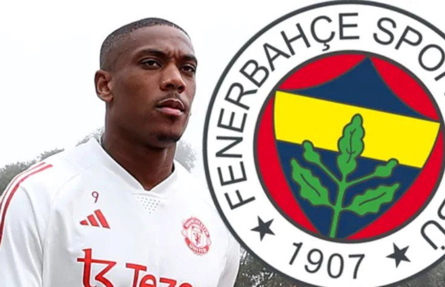

Man United đang gặp nhiều khó khăn ở mùa giải năm nay khi liên tục phải nhận những kết quả thất vọng. Nguyên nhân một phần đến từ việc các trụ cột hàng thủ của "Quỷ đỏ" thay nhau dính chấn thương.
Tính riêng ở vị trí trung vệ, MU đang không có được sự phục vụ của Lisandro Martinez, Victor Lindelof và Harry Maguire. HLV Ten Hag phải xoay tua giữa bộ đôi lão tướng Raphael Varane, Jonny Evans cùng cầu thủ trẻ Kambwala cho vị trí trung tâm hàng phòng ngự.
Ngôi sao Atalanta đang là mục tiêu hàng đầu của "Quỷ đỏ"
Chính vì vậy, việc phải sắm một trung vệ chất lượng ở kỳ chuyển nhượng mùa Đông 2024 là nhiệm vụ cấp bách của đội chủ sân Old Trafford. Theo thông tin từ Metro, MU đã chồng lên bàn đàm phán 60 triệu euro cho trung vệ Giorgio Scalvini để thuyết phục CLB Atalanta nhả người.
Dù mới chỉ 20 tuổi nhưng Giorgio Scalvini đã có tới 75 lần khoác áo Atalanta. Ra mắt CLB từ năm 17 tuổi, từ đó tới nay Scalvini luôn là chốt chặn quan trọng nơi hàng phòng ngự đội bóng Italia. Với chiều cao 1m94, trung vệ sinh năm 2003 cực kỳ mạnh mẽ trong những pha không chiến. Bên cạnh đó, anh còn có khả năng phát động tấn công ấn tượng từ tuyến dưới. Con số 60 triệu euro dành cho trung vệ này là hoàn toàn xứng đáng.
Ở một diễn biến khác, CLB hàng đầu Thổ Nhĩ Kỳ là Fenerbahce cũng đã đánh tiếng muốn sở hữu tiền đạo Anthony Martial ở kỳ chuyển nhượng tháng Một. Mức giá mà đội bóng này đưa ra cho MU chỉ là 8 triệu euro.

Fernebahce muốn sở hữu tiền đạo Martial
Thế nhưng, việc tiền đạo này chỉ còn hợp đồng với MU tới mùa hè 2024 sẽ khiến "Quỷ đỏ" khó đòi hỏi một mức giá hời. Bên cạnh đó, báo chí Thổ Nhĩ Kỳ cho biết, Fenerbahce tự tin rằng mối quan hệ tốt đẹp giữa 2 đội sẽ giúp họ dễ dàng có được Martial.
Ở kỳ chuyển nhượng mùa hè vừa qua, Man United đã bán tiền vệ Fred cho Fenerbahce và mua lại thủ thành Altay Bayindir của đội bóng này.